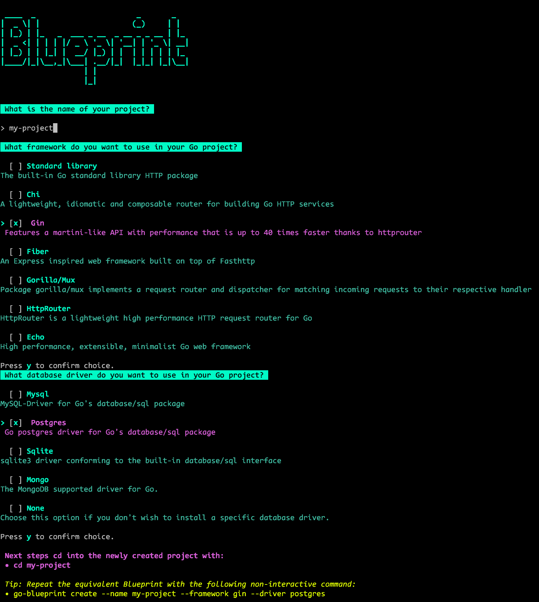
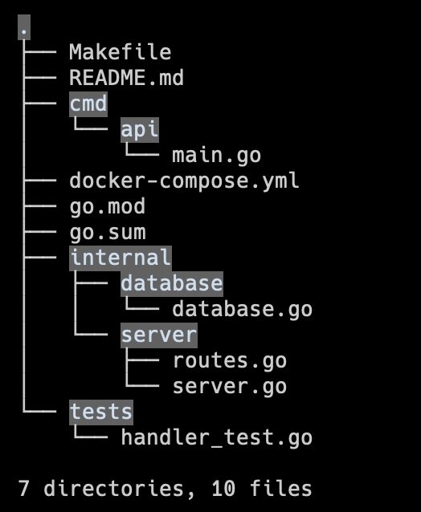
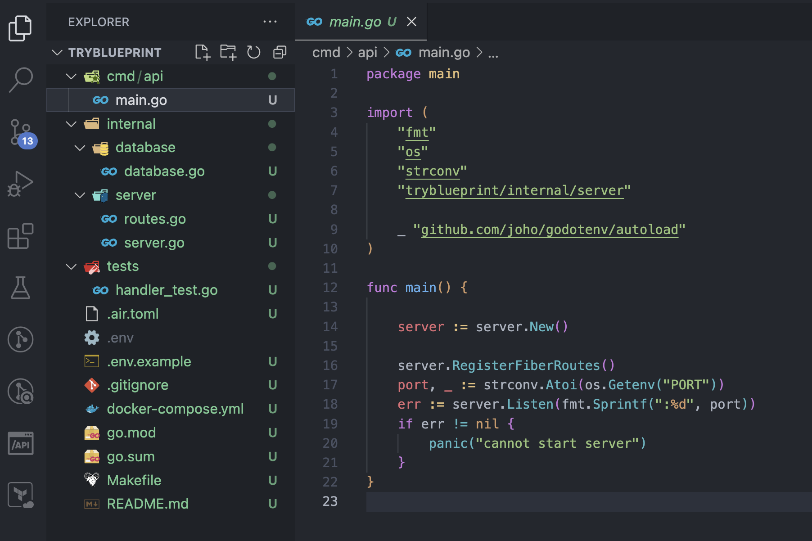

Go Blueprint is a CLI tool that allows users to spin up a Go project with the corresponding structure seamlessly.
Installation
go install github.com/melkeydev/go-blueprint@latestUsage
Then in a new terminal run:
go-blueprint create

Blueprint CLI Interface
Project Structure

Generated Project Structure
Generated Files

Generated Project Files
Features
- Standard Go project layout
- Common directories pre-created
- Basic configuration files
- Docker setup
- Makefile included
Directory Structure Overview
| Directory | Purpose |
|---|---|
| /cmd | Main applications |
| /internal | Private application code |
| /pkg | Public library code |
| /api | API definitions |
Benefits
- Consistent project structure
- Quick project setup
- Best practices included
- Development ready configuration
- Time-saving automation